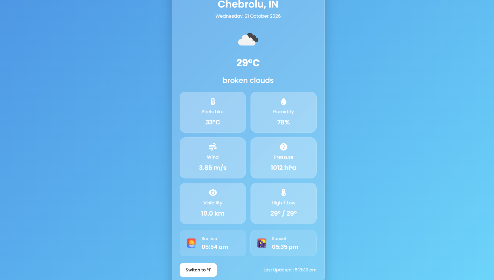

Hi, I'm Balu Nijampatnam
Software Engineer | Full-Stack Development & AI/ML
I am a pre-final-year Computer Science and Engineering student at IIIT Jabalpur. I am deeply interested in software engineering, full-stack development, and applied AI/ML. My experience spans building robust backend systems, APIs, and databases, alongside developing intelligent computer vision and machine learning pipelines. I am an avid problem solver with significant competitive programming achievements, and I am currently exploring advanced RAG and agentic AI to bridge the gap between scalable software architecture and intelligent systems.

Education
Indian Institute of Information Technology Jabalpur
Aug 2024 – PresentBachelor of Technology in Computer Science and Engineering
CPI: 9.0
Jabalpur, Madhya Pradesh, India
Sri Chaitanya Junior College
2022 – 2024Class XII (Higher Secondary Education)
Score: 982 / 1000 (~98.2%)
Vijayawada, Andhra Pradesh, India
Sri Chaitanya School
2021 – 2022Class X (Secondary Education)
Score: 577 / 600 (~96.17%)
Tenali, Andhra Pradesh, India
Technical Skills
Programming Languages
Frontend Development
Backend Development
Databases
Machine Learning
Libraries & Frameworks
Tools & Platforms
Relevant Coursework
Projects




Coding Profiles

Achievements
Flipkart GRiD 8.0
Semi-Finalist
Software Development Track
1000+ Algorithmic Problems
Solved more than 1,000 algorithmic problems across LeetCode, Codeforces, and CodeChef.
LeetCode Weekly Contest 514
Global Rank: 2806 out of 48,162 participants
CodeChef Starters 249
Rank: 333